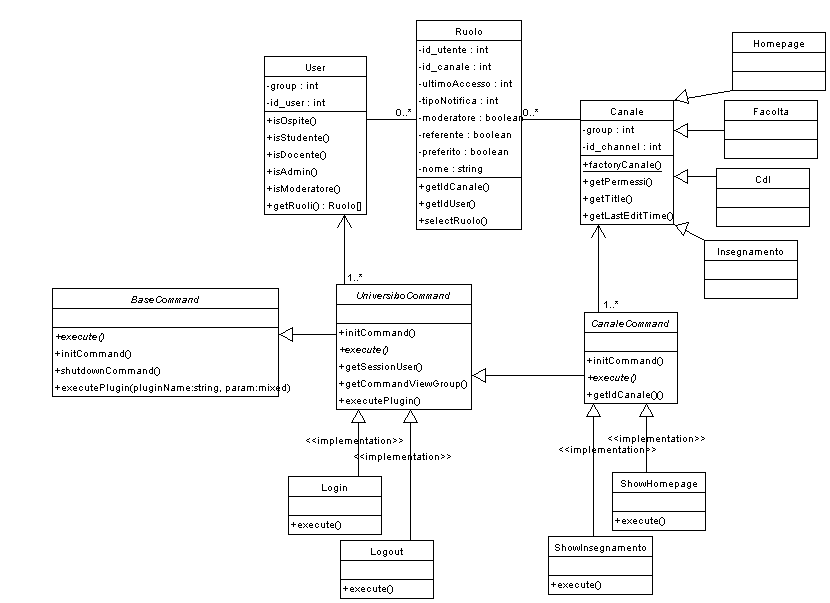
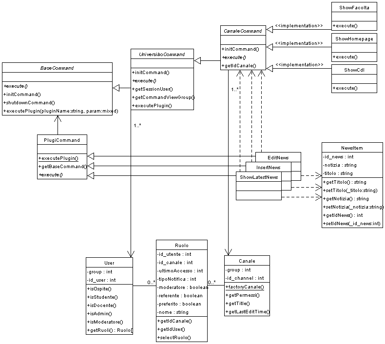

Le entità che trovano si alla base del modello sono, l'utente e il canale di informazione.
Il principale problema che si è subito evidenziato è stato quindi
la modellazione di un utente, dei gruppi di utenti, dei loro ruoli ripetto ad
un canale e del canale d'informazione stesso.
A questo proposito si sono ritenute molto utili le seguenti letture:

UniversiboCommand aggiunge oltre
a tante altre funzionalità comuni a tutto il sito, il riferimento ad
un oggetto User che identifica l'utente che sta utlizzando
il servizio.
Per descrivere il comportamento dello User si è
scelta (si veda(1))
una soluzione mista con un InternalFlag per descrivere il gruppo
di appartenenza dell'utente e una RoleRealtionShip che lo lega
al Canale
Il pattern Session(2)
è già ricoperto dall'UniversiboCommand
che sfruttando le sessioni native del linguaggio PHP tiene traccia dell'utente.
Il comando Login implementa un Check Point(2)
ripetto ad User per verificarne l'identità,
da quel punto in avanti gli accessi ad ogni canale sono verificati. Infatti
CanaleCommand implementa all'iterno del metodo initCommand()
il pattern Secure Acces Layer(*)
rispetto ad User per verificare l'accesso in base
al gruppo di appartenenza.
Nelle implementazioni dei comandi che ereditano da CanaleCommand
devono essere prese in considerazione azioni relative al Ruolo
che l'utente ricopre all'interno del canale creando delle Limited View(2).
Seconda grossa problematica consiste nella differenziazione dei canali e nella loro estendibilità tramite i plugin.
Come si può vedere anche dal diagramma sopra, il canale può essere esteso da classi figlie per, permettere l'accesso alle diverse implementazioni specifiche si è scelto di inserire nela classe un il metodo statico canaleFactory() che è a conoscenza degli specifici sottotipi e ritorna le istanze di tipo appropriato dato l'identificativo.
Grazie all'utilizzo del framework si può vedere un esempio di come sarà facile integrare dei plugin su qualsiasi canale.
